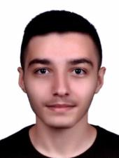

EMİRHAN KAYA
2002 yılında İstanbul'un Sarıyer ilçesinde doğdu.
2015 yılında Suşehri Fen Lisesini kazandığında İstanbul'dan Sivas'a taşındı.
4 yıllık lise öğrenimi boyunca yazılımı daha çok keşfetme fırsatı buldu.
2020 yılında Sakarya Üniversitesi Bilgisayar Mühendisliğini kazandı.
C , C++ , C# , python , html , css , node.js gibi diller üzerinde projeler geliştirdi.
Şu anda 1. sınıf öğrencisi olarak yeni projeler geliştirmeye devam ediyor.